{kind=link}
{kind=link}
{kind=link}
{kind=link}
{kind=link}
{kind=link}
{kind=link}
{kind=link}
{kind=link}
{kind=link}
{kind=link}
{kind=link}
{kind=link}
{kind=link}
{kind=link}
{kind=link}
{kind=link}
{kind=link}
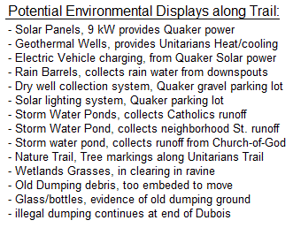 Interfaith Environmental Trail: One way to maintain the integrity of this natural watershed area is to connect our preservation efforts with a nature trail. We have suggested calling this the Luce Creek Interfaith Environmental Trail and have sketched some ideas on the map above. Green areas indicate property owners already involved in maintaining their portion of the trail. Yellow lines are hopeful areas. Red notes highlight some of the significant environmental protection projects also listed at the right. Another section of the potential trail is in the Southeast corner of the above map. This area can potentially connect St John Neumann's, the Weems Creek Baptist Church and possibly the Presbyterians. You can see a possible route in detail, here showing the UU's Geothermal Wells and Catholic water management ponds. In the Luce Creek ravine, the trail needs occasional trimming of invasive greenbriar patches and maintenance of the foot bridges over muddy areas. The trail in the area connecting to the Bestgate Park and Church of God seemed to be in fine shape as shown here.
{kind=link}
Issues and Concerns: This is not a group work party effort since we do not want to appear to be exploiting the wilderness area but only to join together in concern over its protection. We simply want to recognize our connecting, adjacent properties and share in the overall upkeep of the area. There should be no liability concerns, since this is nothing more than maintaining our mutual trails like we maintain sidewalks. The trail is not public but simply ours collectively.
{kind=link}
Annapolis Area Trails: To show how this natural area fits within the greater Annapolis area and county system of trails, we have circled our location on the map below in green and sketched the main trail. In particular from Bestgate Park the three main annapolis trails are accessible, the South Shore Trail towards Crownsville, the B&A trail across the Severn and up towards Baltimore, and the Colonial Annapolis Trail.
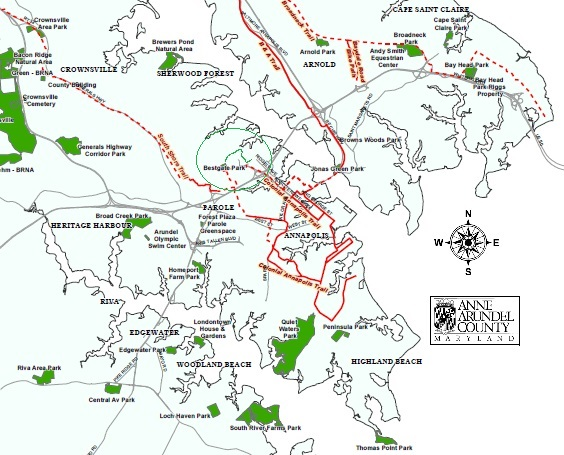
AFM and Unitarian Environmental Efforts: The rest of this page covers the detail on the AFM and Unitarian portions of the trail. We are happy to add sections or links for other groups' efforts.
See our other Environmental Projects
------------------------------------------------------------
Over the past decade, the Annapolis Friends Meeting and Unitarians have long been involved in protecting the natural beauty of this area between Dubois and Lawrence roads with nature trails as shown below. Although the south side of the creek has been a dumping ground for most of the last century, most of it is grown over. Several annual clean ups have been sponsored by the Unitarians, Quakers, Severn River Keepers and even some Naval Academy midshipmen. Each event results in the removal of tons of junk and surface debris from old cars and appliances and thousnad of broken bottles.
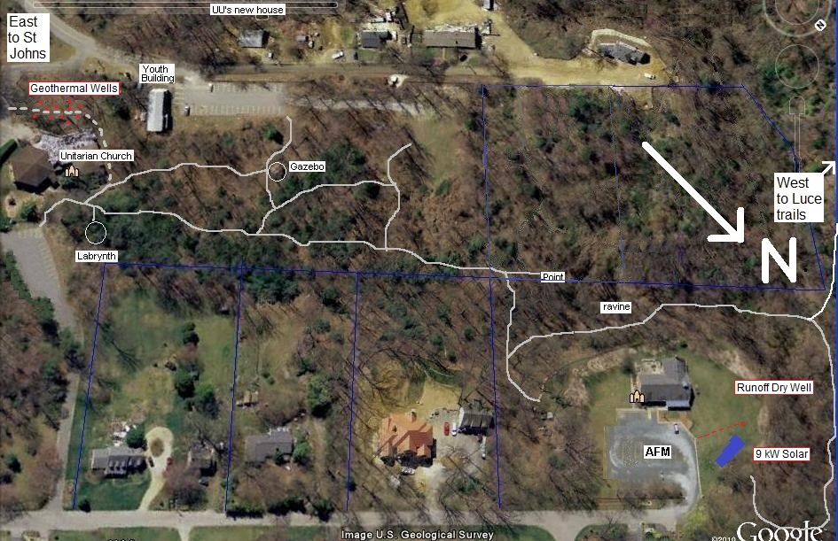
Some History and a Photo Walk of the Trail: Annapolis Friends Meeting is concerned for the environment and began a number of efforts in this regard. Back in June 2011 we were having meetings in consideration of adjacent properties and how to protect the wilderness. We realized that it might be nice to have a photo tour of some of the trails that our AFM kids have used in communing back and forth with the Unitarians.
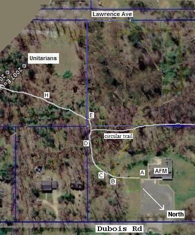 This web page attempts to capture this small protion of the trail shown here. Our own trail system that circles our lot and connects into the Luce Creek Trail system goes off the map to the right and circles around down into the Luce Creek ravine and comes back up behind our solar panels. The trails on this page are just a small part of the overall system of trails that our kids and other youth have discovered through the Luce Creek Watershed. We invite other churches to join in this Luce Creek Interfaith Trail system. Click here to see an overall map. This page has been updated in February 2014 as we enter spring and hopefully some trial work.
{kind=link}
Existing Unitarian and Quaker trails: Currently access to the AFM trail is from the hallway door and out the sidewalk to the east as shown below[A]. As seen on the map to the right, the trail proceeds along our eastern property line down into the ravine (D) and up the other side. There (at E) it turns left towards the Unitarians. The trails in our ravine encroach slightly on adjacent property owners and we hope to correct that in the future.
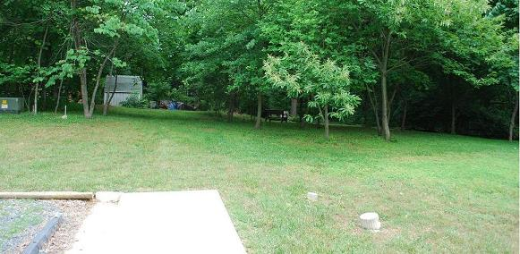
Begin : From our meeting house and the end of the sidewalk we walk past our memorial garden on the right and down into the woods as shown below[B].
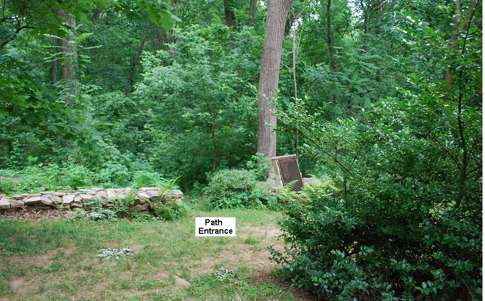
Past our Memorial Garden : This trail above heads on a gentle slope down into the ravine[C].
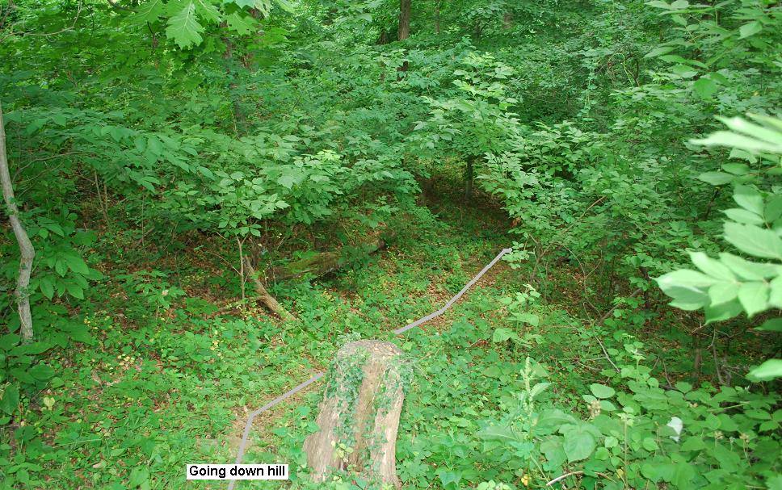
Down the Hill: The path is left adjacent to our eastern property line and passes between two large tulip Poplars at the bottom of the ravine. Notice that the creek bed is completely dry at this end of the property[D]. Just prior to this photo is the turn to the right that gets you onto our circular trail down into our ravine, across the creek, then down into the Luce Creek ravine and then back up at the end of Dubois Road behind our solar panels.
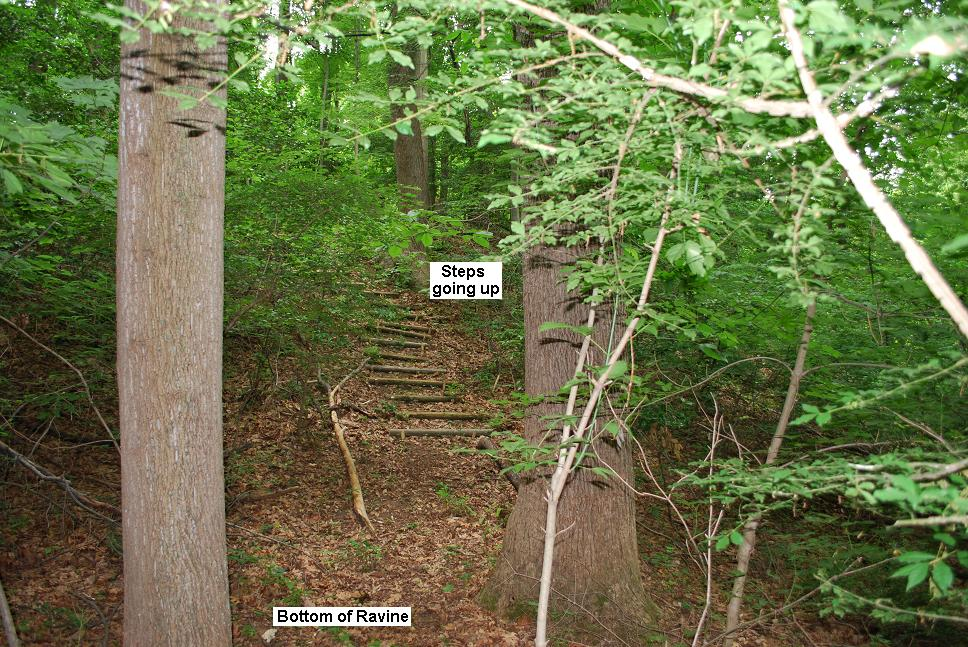
Climbing the Other Bank: These 25 steps carry you up the other side to the top of the hill and into a wooded clearing in the southern most corner of our lot. You enter this area from the left of the view below[E]. Since this location is a major trail junction in the Luce Creek wilderness area, we have simulated some possible trail signs to show the distances to the other Churches and Youth areas. The sign on the left is pointing back the way you came since you need to be on our circular trail to get to the main trail down in the Luce Creek valley. But, before heading towards the Unitarians you can pivot to the right to see some more views.
Simulated Signs:
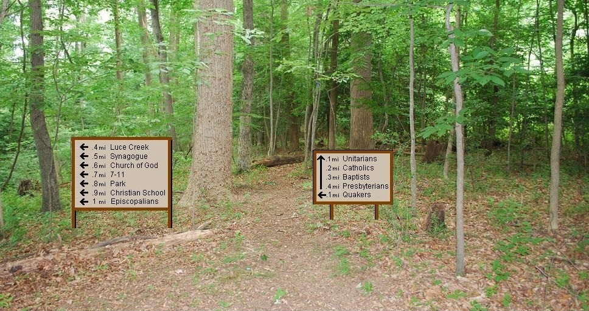
Point Pleasant: This is not our poperty and we should stay out of this area. We hope to put up some kind of aesthetically pleasing indication that this property is private and should be respected. Looking opposite from the direction of the Unitarian path (above) you can see a very large tree with a hole under it (below)[F]. Behind this tree from the left is a dip from our neighbor's private property down into the ravine (to the right. The outline of our meeting house is shown with a yellow line.
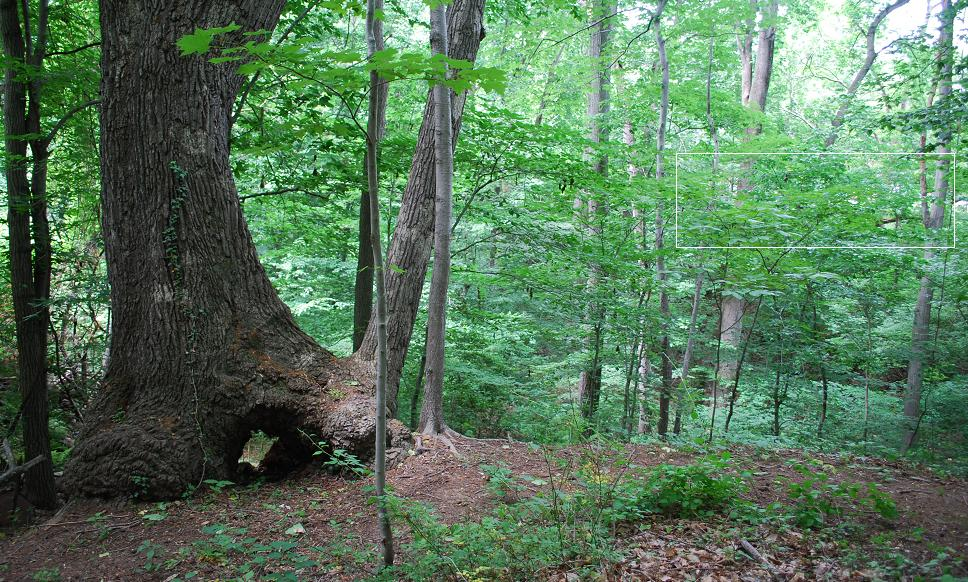
The View to AFM: Looking further to the right almost back from whence you came, you can see the AFM building brick colors seeping through the trees in the ravine and the light from the treeless area of our AFM property. The winter view of the AFM meeting house will be in the area highlighted here with a yellow box. In the lower center of this view is a yellow line strung across the ravine whre a dream bridge could be built (see walkway page). Again, the yellow box outlines the AFM building which is hard to see through the trees[G].
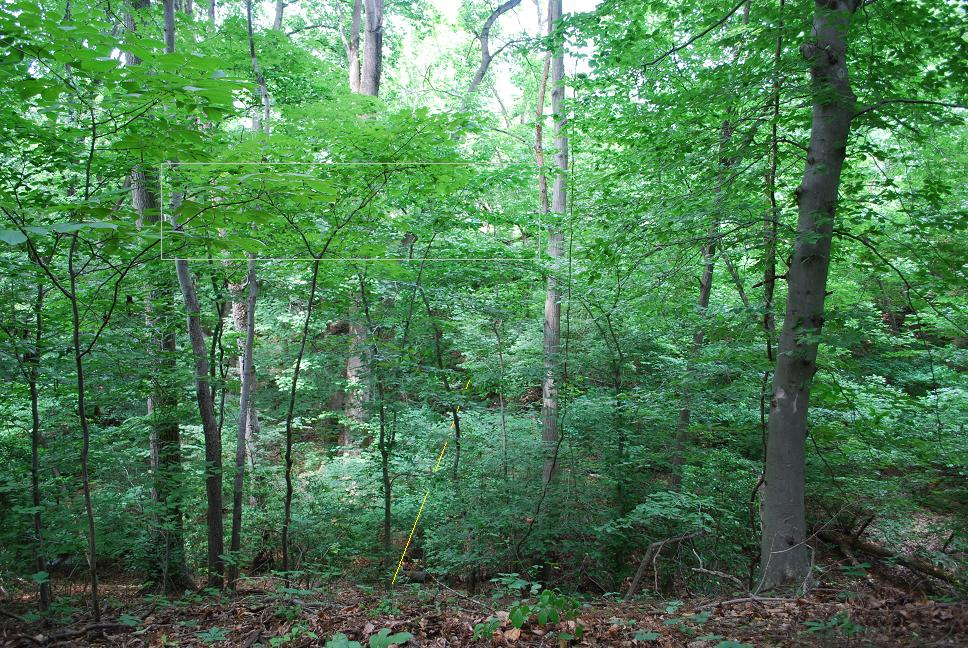
Continuing Towards the UU's: Completing your 360 degree turn to the right, where teh simulated signs are located, you can then proceed down the path towards the Unitarian Trail System[H].
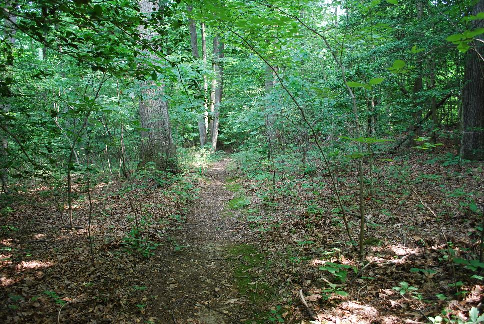
Overall Area Map: At this point it might be a good idea to take a look at an overall map (bottom of page) of the entire area to help you get your bearings. The large image below covers all the trails between the Unitarians and AFM. Notice, that the area behind our meeting house belongs to our neighbor and should not be used. This map does show our AFM circular trail.
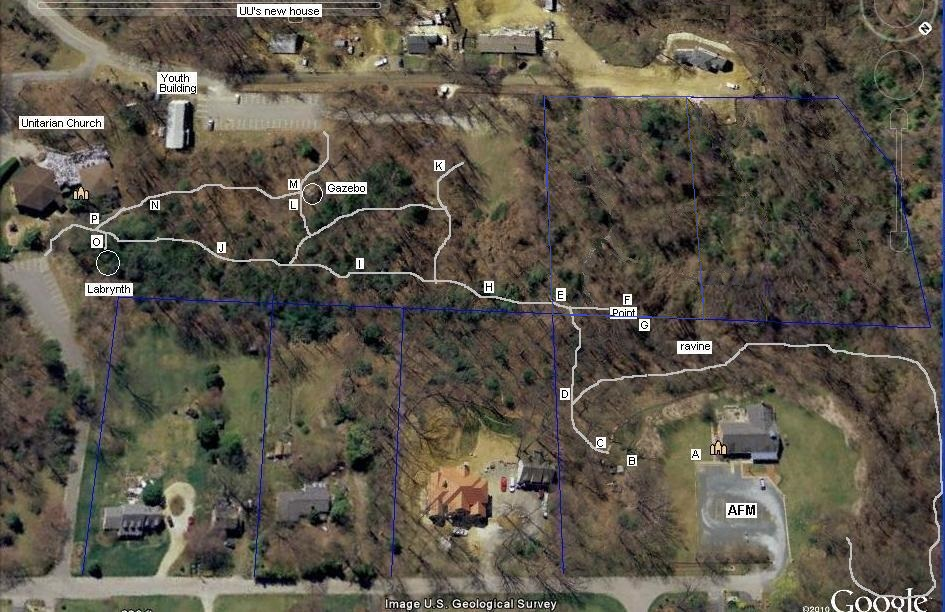
This path from that four-corners area extends eastward (to the left in this southern view) probably 100 yards towards the Unitarians[I].

The Unitarian Nature Trail: Once into the Unitarian Trails System you will notice many trees are marked with nature trail placards and can see an occasional bench for the foot weary as shown below[J].
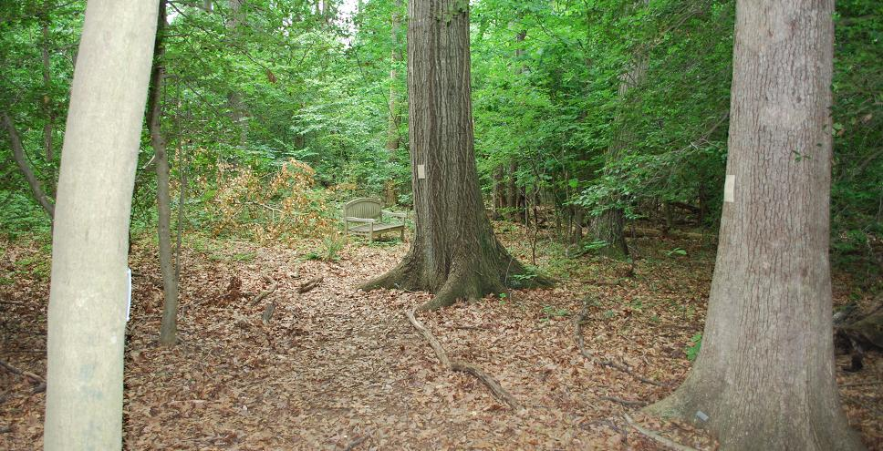
The Unitarian Field: A side path to the south opens up into the nice green field that marks the western end of the Unitarian property and is open to Lawrence Ave.
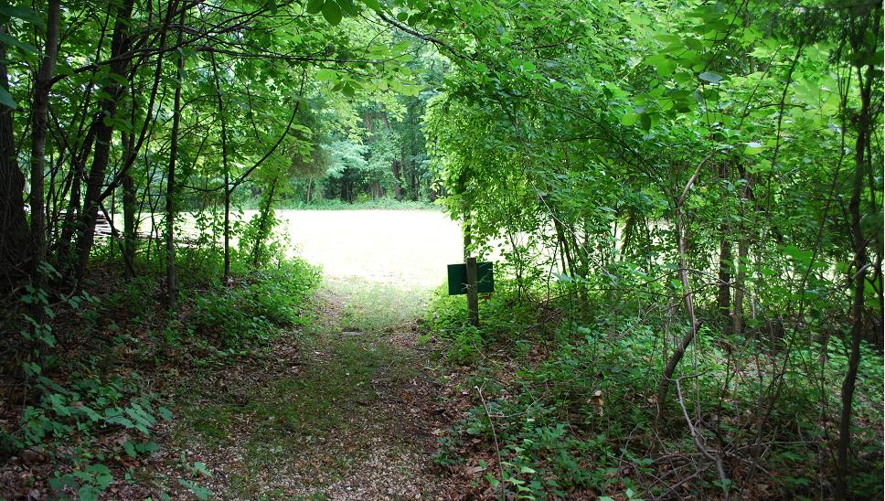
This field marks the western end of the existing Unitarian property. On the far side of this field is the shared property line with the new property that is currently for sale. The right end of that property line runs into the AFM eastern property line.
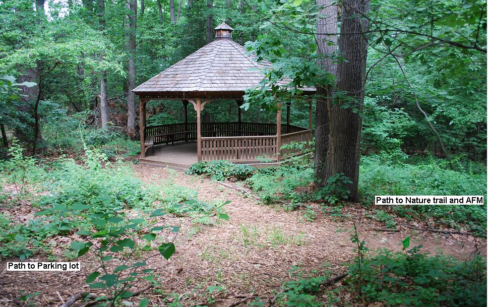
The Gazebo: Turning back to the east, you come to a path to a gazebo in the woods. This seems to make a nice quite place to have a meeting or gathering. For any future ideas for AFM, I might suggest a structure with a translucent roof so that the light can shine in. The tree canopy provides plenty of shade for the structure, so the roof is only need to protect from rain. A central fire place could extend the useable seasons of such a structure.
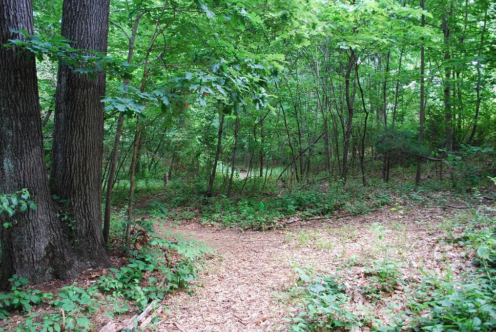
The Trail to the UU's: Turning back from the gazebo, the trail winds through the woods towards their building compex.
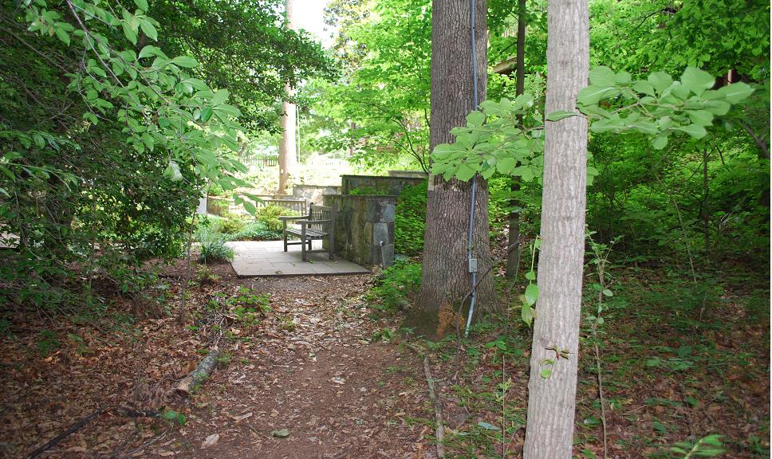
The Memorial Garden: The paths eventually come out into the Unitarian Memorial Garden above.
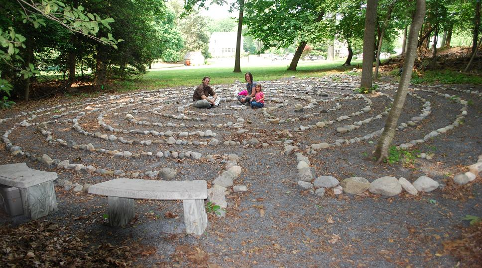
The Labrynth: But first if you turn to the left you can see their Labrynth. The first time I walked through, I saw a kid patiently tracing his way thorugh the maze. Later when I came back with my camera, I found this family sitting in the middle of the Labrynth. The UU's have an annual Summer Program for kids called Camp Beagle that involves kids outdoors learning about the environment.
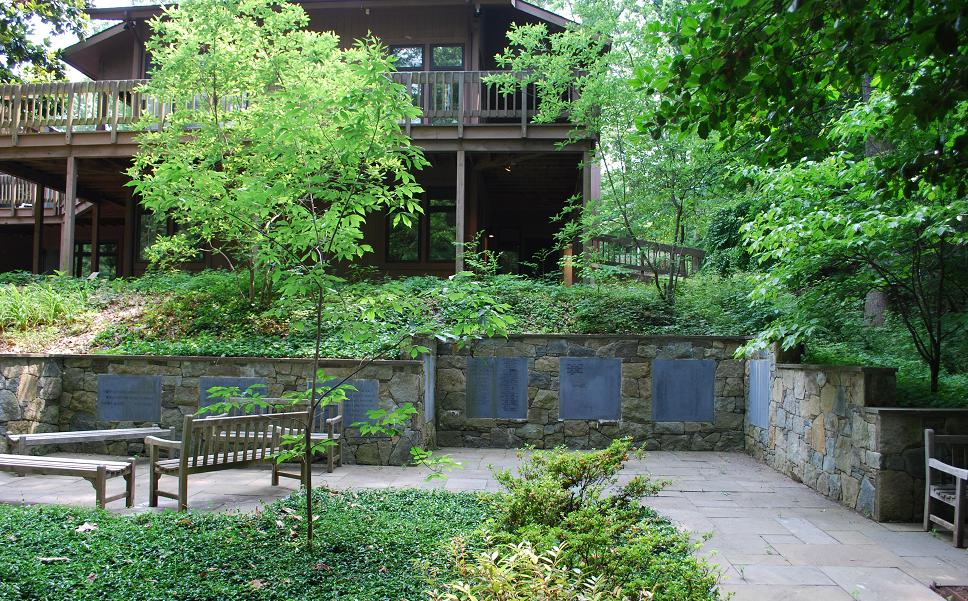
The UU's Garden and Deck: Turning back to the right and entering the Memorial Garden gives a good view of their memorials and one end of their church building. If you continue to the left up and across the Unitarian parking lot the trail enters the Catholic Church area and from there it could proceed across Dubois, behind the Knights of Columbus and then onto the Baptist's land and across Ridgley onto the Presbyterians as shown below:
------------------------------------------------------------
We have played with lots of imaginary ideas such as a far future project to visualize a possible elevated walkway across the ravine.
Bob Bruninga
lastname @ usna.edu
------------------------------------------------------------